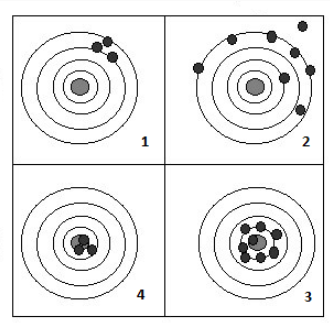

Para construir los estimadores se emplean métodos de estimacién como se describe a continuación:
El método de momentos fué propuesto por Karl Pearson al rededor de 1895, pensado en sus inicios en contexto descriptivo, analizando las distribuciones de probabilidad y aproximandolas al sistema de curvas que llevan su nombre. Porteriormente este concepto fue modificado por R.A. Fisher en 1920. El método consiste en estimar un parámetro de una distribución igualando sus momentos teóricos o poblacionales, si existen, con los correspondientes momentos muestrales.\
Para mostrar este método es necesario definir el concepto de momento.
\(M_{k}=E\big[X^{k}\big]=\sum_{Rx} x^{k}p(x)\)
$M_{k}=E=_{-}{}x{k}f(x) dx $
En ambos casos (v.a. discreta o continua)
$m_{k}={i=1}^{n} x{i}^{k} $
El método de momentos supone que los momentos tanto poblacionales como muestrales son conocidos, y por lo tanto tambien la función de probabilidad. A continuación se relacionan algunos de estos momentos poblacionales:\
| Distribución | \(E[X]=\mu\) | \(V[X]=E[X^{2}]-E[X]^{2}=\sigma^{2}\) |
|---|---|---|
| Bernoulli | \(p\) | \(pq\) |
| Geométrica | \(\displaystyle\frac{1}{p}\) | \(\displaystyle\frac{q}{p^{2}}\) |
| Binomial | \(np\) | \(npq\) |
| Poisson | \(\lambda\) | \(\lambda\) |
| Gamma | \(\alpha\beta\) | \(\alpha\beta^{2}\) |
| Exponencial | \(\beta\) | \(\beta^{2}\) |
| Uniforme | \(\displaystyle\frac{a+b}{2}\) | \(\displaystyle\frac{(b-a)^{2}}{12}\) |
| Normal | \(\mu\) | \(\sigma^{2}\) |
Encuentre los estimadores de los parametros de la distribucion normal a traves del metodo de momentos. Previamente sabemos que los parametros de una variable con distribucion normal son \(E[X]=\mu\) y \(V[X]=\sigma^{2}\) y que \(V[X]=E[X^{2}]-E[X]^{2}\). Dada esta informacion el estimador de momentos se construye de la siguiente manera:
\[M_{1}=m_{1} \] \[M_{2}=m_{2} \]
Aplicando el método:
\(M_{1}=E[X] = m_{1}\)
\(\mu =
\displaystyle\frac{1}{n}\sum_{i=1}^{n}x_{i}\)
Finalmente,
\(\widehat{\mu} = \displaystyle\frac{1}{n}\sum_{i=1}^{n} x_{i}=\bar{x}\)
Para estimar \(\sigma^{2}\), se realiza el siguiente procedimiento usando \(M^{1}=m^{1}\) y \(M^{2}=m^{2}\).
\[V[X]=E[X^{2}]-E[X]^{2} = M_{2}-(M_{1})^{2}\]
entonces igualamos estos dos momentos poblacionales con sus respectivos momentos muestrales quedando la igualdad
\[V[X]= M_{2}-(M_{1})^{2}=\displaystyle\frac{1}{n}\sum_{i=1}^{n}x_{i}^{2}-\bar{x}^{2}\] podemos representar la varianza por \(\sigma^{2}\) y obtenemos
\[\sigma^{2}=\displaystyle\frac{1}{n}\sum_{i=1}^{n}x_{i}^{2}-\bar{x}^{2}\]
y obtenemos el estimador de la varianza:
\(\widehat{\sigma^{2}} =\displaystyle\frac{1}{n}\sum_{i=1}^{n}x_{i}^{2}-\bar{x}^{2}\)
\(\widehat{\sigma^{2}} = \displaystyle\frac{1}{n}\sum_{i=1}^{n}x_{i}^{2}-\bar{x}^{2}-\bar{x}^{2}+\bar{x}^{2}\)
\(= \displaystyle\frac{1}{n}\sum_{i=1}^{n}x_{i}^{2}-2\bar{x}^{2}+\bar{x}^{2}\)
\(= \displaystyle\frac{1}{n}\sum_{i=1}^{n}x_{i}^{2}-\displaystyle\frac{2\bar{x}\sum x_{i}}{n}+\displaystyle\frac{n \bar{x}^{2}}{n}\)
\(=\displaystyle\frac{1}{n}\Big(\sum_{i=1}^{n} x_{i}^{2}-2\bar{x}\sum_{i=1}^{n} x_{i}+\bar{x}^{2}\Big)\)
\(\widehat{\sigma^{2}} = \displaystyle\frac{1}{n}\sum_{i=1}^{n}\Big(x-\bar{x}\Big)^{2}\)\
En resumen los estimadores de momentos para los parámetros de la distribución normal son:
\[\widehat{\mu} = \displaystyle\frac{1}{n}\sum_{i=1}^{n} x_{i}=\bar{x} \] \[\widehat{\sigma^{2}}=\displaystyle\frac{1}{n}\sum_{i=1}^{n}\Big(x-\bar{x}\Big)^{2}\]
A partir de ellos y mediante la obtención de una muestra aleatoria por ejemplo :630, 650, 710, 750, 790, 820, 860 y 910 se pueden estimar los parámetros por método de momentos con los siguientes resultados:
\[\widehat{\mu}=765\]
\[\widehat{\sigma^{2}}=8550\]
Uno de los mejores métodos para obtener un estimador puntual de un parámetro es el método de máxima verosimilitud o de máxima probabilidad. ESta tecnica fue desarrollada en 1920 por el estadístico britanico Sir R.A. Fosher. El estimador será el valor del parámetro que maximice la función de verosimilitud \(L(\theta)\).
La función de verosimilitud \(L(\theta)\) corresponde a la funcion de distribución conjunta de variables aleatorias independientes con igual funcion de distribucion. Estas variables aleatorias corresponden a las variables que conforman la muestra.
\[L(\theta)=f(x_{1},\theta).f(x_{2},\theta).f(x_{3},\theta)....f(x_{n}),\theta)\]
El objetivo del método sera encotrar el valor del parametro que maximice la probabilidad conjunta.
El método supone el conocimiento de la función de distribución de probabilidad de la variable en estudio. Por
En la unidad anterior tratamos en caso de la distribución normal cuya función de distribución de probabilidad esta dada por :
\[f(x_{i})=\frac{1}{\sqrt{2\pi}\sigma^{2}} \exp{\Bigg(-\frac{1}{2\sigma^{2}}\big(x_{i}-\mu\big)^{2}\Bigg)}\]
La función de verosimulitud estará dada por:
\[L(x_{1},x_{2},..,x_{n};\mu,\sigma^{2})=f(x_{1};\mu,\sigma^{2})....f(x_{n};\mu,\sigma^{2})\] Esta función se puede escribir como :
\[L(x_{1},x_{2},..,x_{n};\mu,\sigma^{2})=\displaystyle\prod_{i=1}^{n} \frac{1}{\sqrt{2\pi \sigma^{2}}} \exp{\Bigg(-\frac{1}{2\sigma^{2}}\big(x_{i}-\mu\big)^{2}\Bigg)} \]
\[L=\displaystyle\Big(\frac{1}{2\pi \sigma^{2}}\Big)^{n/2} \exp \Bigg(\sum_{i=1}^{n}\frac{-1}{2\sigma^{2}}(x_{i}-\mu)^{2}\Bigg) \]
\[L=\displaystyle\Big(2\pi \sigma^{2}\Big)^{-n/2} \exp \Bigg(\frac{-1}{2\sigma^{2}}\sum_{i=1}^{n}(x_{i}-\mu)^{2}\Bigg) \]
El método consiste en encontrar el valor del parámetro que maximice esta función para lo cual procedemos a derivar \(L\) parcialmente con respecto a \(\mu\).
Este proceso presenta algunas dificultades de calculo que son atenuadas mediante la premisa de que el maximo de la funcion \(L\) corresponde a los mismos maximos de la funcion \(\ln(L)\), la cual es mas sencilla de derivar. Este procedimiento es posible debido a que la función \(L\) es creciente
Convertimos \(L\) en \(ln(L)\) % \[\ln(L)= -\displaystyle\frac{n}{2} \ln(2\pi) - \displaystyle\frac{n}{2} \ln(\sigma^{2})+\displaystyle\frac{1}{2\sigma^{2}}\displaystyle\sum_{i=1}^{n}(x_{i}-\mu)^{2}\] Al derivar parcialmente \(\ln(L)\) con respecto a \(\mu\) tenemos:
\[\displaystyle\frac{\partial \ln(L)}{\partial \mu}= -\displaystyle\frac{{2}}{{2}\sigma^{2}} \displaystyle\sum_{i=1}^{n} (x_{i}-\mu) =0\]
De esta igualdad se despeja el parámetro de interés \[{\sigma^{2}}\frac{1}{{\sigma^{2}}}\sum_{i=1}^{n} (x_{i}-\mu) =0 \sigma^{2} \] \[\sum_{i=1}^{n} x_{i} - n \mu =0\]
\[\widehat{\mu}=\frac{1}{n}\sum_{i=1}^{n} x_{i} = \bar{x}\]
En el caso de la estimación de \(\sigma^{2}\), se deriva \(\ln(L)\) parcialmente con respecto a \(\sigma^{2}\), se iguala a cero el resultado obtenido y por último se despeja \(\sigma^{2}\). Verifique que el estimador de máxima verosimilitud para la varianza es igual a:
\[\widehat{\sigma^{2}}=\frac{1}{n-1}\sum_{i=1}^{n} \big(x_{i}-\mu \big)^{2} \]
Algunas propiedades de la función \(\ln(x)\)
Anteriormente se describieron dos los metodos para la construcción de estimadores, Estos métodos generan diversas alternativas dentro de los cuales debemos seleccionar los mejores. Para realizar dicha clasificación debemos examinar sus primcipales propiedades como son la INSESGADEZ, CONSISTENCIA, EFICICIENCIA y SUFICIENCIA, entre otras.

Un indicador que mide la calidad de un estimador \(\widehat{\theta}\) se denomina Error Cuadrático Medio (ECM) y se define de la siguiente manera:
Se define como Error Cuadrático Medio (ECM) el valor esperado de la diferencia entre el estimador y el parámetro, al cuadrado.
\[ECM[\widehat{\theta}]=E[\widehat{\theta}-\theta]^{2} \]
Se dice que el estimador \(\widehat{\theta}\) que es función de los datos contenidos en una muestra, es un estimador insesgado del parametro \(\theta\), si \(E[\widehat{\theta}]=\theta\), para todos los posibles valores de \(\theta\) (Canavos(1988))
Suponga que una muestra aleatoria simple de \(X_{1},X_{2},...,X_{n}\) procede de una población con \(E[X]=\mu\), el parámetro de inters. Probar que la media muestral \(\bar{X}\) es siempre un estimador insesgado del parámetro media poblacional \(\mu\).\ \[ \begin{eqnarray*} E\big[\bar{X}\big]&=&E\Bigg[\frac{1}{n} (X_{1}+X_{2}+...+X_{n} \Bigg]\\ &=&\frac{1}{n}\Big[E\big[X_{1}+X_{2}+...X_{n}\big]\Bigg]\\ &=& \frac{1}{n}\Big[E[X_{1}+E[X_{2}+...+E[X_{n}] \Big]\\ &=& \frac{1}{n} \Big[\mu+\mu+..+\mu\Big]\\ &=& \frac{1}{n} n\mu =\mu\\ \end{eqnarray*} \]
Se dice que \(\widehat{\theta}\) es un estimador asintoticamente insesgado de \(\theta\) si al aumentar el tamaño de la muestra se convierte en un estimador insesgado de \(\theta\) (Sarabia 2007)
Sea \(\widehat{\theta}\) el estimador de un parametro \(\theta\) y sea \(\widehat{\theta_{1}},\widehat{\theta_{2}}...\widehat{\theta_{n}}\) una secuencia de estimadores que representan a \(\widehat{\theta}\) con base en muestras de tamaño \(1,2,...n\), respectivamente. Se dice que \(\widehat{\theta}\) es un estimador cositente para \(\theta\) si: \[\lim_{n \to \infty} P(|\widehat{\theta} - \theta|\leq \epsilon)=1 \] para todos los valores de \(\theta\) y \(\epsilon>0\)
Sean \(\widehat{\theta_{1}}\) y \(\widehat{\theta_{2}}\) dos estimadores insesgados del parámetro \(\theta\):
Se dice que el estimador \(\widehat{\theta_{1}}\) es más eficiente que el estimador \(\widehat{\theta_{2}}\) si \[V[\widehat{\theta_{1}}]<V[\widehat{\theta_{1}}]\].
Se defome la eficiencia relativa de un estimador con respecto a otro como el cociente de las varianzas: \[\frac{V[\widehat{\theta_{2}}]}{V[\widehat{\theta_{1}}]}\]
Existe la cota de Cramer Rao, que permite estimar un valir mínimo de la varianza, en caso de que algun estimador tenga como varianza este valor decimos que este estimador es eficinete. Formula de cota de Cremer Rao
Se dice que un estimador \(\widehat{\theta}\) es un estimador suficiente del parámetro \(\theta\), si la distribución condicional de la muestra (\(L(x,\theta)\))no depende de \(\theta\) (Sarabia(2007)) Otra forma de establecer si un estimador es suficiente es:
Sea \(L(x,\theta)\) la función de probabilidad de la muestra. El estimador \(\widehat{\theta}\) es suficiene para la estimación de \(\theta\) si y solo si existen funciones \(g\) y \(h\) tales que: \[L(x,\theta)=g(x)h(\widehat{\theta}(x)) \] Con \(g\) una función no negativa que solo depende de la información de la muestra \((x)\) y \(h\) que es una función no negativa que depende de \(\widehat{\theta}\) y \(\theta\). (Sarabia(2007)).
Cuando se escoge un estimador se debe elegir aquel que genere las mejores condiciones de estimación. Pensemos que en el centro de la diana está el parámetro objetivo. Si elegimo un estimador que proporcione resultados similares al cuadrante 1 estaremos optando por un estimador que tiene una varinza pequeña, pero está alejado del centroestimador sesgado. En el caso del cuadrante 2, el estimador tienen una varianza grande, pero además es sesgado. En el cuadrante 3 tenemos un estimador insesgado - en promedio damos en el centro - pero presenta una varianza grande. Finalmente el estimador representado por el cuadrante 4, presenta las mejores condiciones, tiene varianza pequeñaa y es insesgado. \ Tambien es posible elegir un estimador sesgado, al que sea posible estimar su sesgo y ser corregido o un estimador insesgado pero consistente, es decir que en principio sea sesgado pero que si aumentamos el tamaño de la muestra se torne insesgado.
[b.] Cuál de los tres estimadores es preferible?, justifique su respuesta.
[c.] Si para la selección de estimadores exigimos que sea insesgado, ¿cuál es ahora preferible?.
pp 175 ejemplo 8.8 Sarabia
[a.] Si se considera el estimador \(\widehat{\theta_{1}}=2\bar{X}\). Probar que es un estimador insesgado y calcular su varianza. Probar que es un estimador consistente.
[b.] Como un estimador alternativo se considera elvalor máximo de la muestra:\(\widehat{\theta_{1}}=\max\{X_{1},X_{2},...X_{n}\}\). Diseñe un experimento simulado que permita mostrar que este estimador es sesgado pero consistente.
\[\widehat{\mu_{1}}=\frac{1}{4}\big(X_{1}+X_{2}+X_{3}+X_{4}\big) \] \[\widehat{\mu_{2}}=\frac{1}{2}X_{1}+\frac{1}{4}X_{2}+\frac{1}{8}\big(X_{3}+X_{4}\big) \]
[a.] Pruebe que se trata de estimadores insesgados
[b.] Cuál de los estimadores es preferible para estimar \(\mu\)?. Justifique su respuesta
\[ f(x)= \frac{e^{-\lambda} \lambda^{x}}{x!} \]
Como se ha estudiado anteriormente la función de verosimilitud corresponde a la función de distribución conjunta de las n variables aleatorias que conforman la muestra. Como estas variables conforman un grupo de variables independientes su función distribución se construye a partir de la multiplicacion de las funciones de cada una de las variables
\[L(X_{1},X_{2}..X_{n};\lambda)=f(X_{1}.f(X_{2})....f(X_{n}) \] \[L(X;\lambda)=\prod_{i=1}^{n} f(X_{i})=\prod_{i=1}^{n} \frac{e^{-\lambda}\lambda^{x}}{x!}\]
quedando finalmente \[L(X;\lambda)=\displaystyle\frac{e^{-n\lambda}\displaystyle\lambda^{\sum x_{i}}}{\prod x_{i}!} \]
[b.] En el caso de la función uniforme con función de distribución
\[ f(x)=\displaystyle\frac{1}{b-a}\]
tenemos el siguiente desarrollo:
\[L(X_{1},X_{2}..X_{n};a,b)= \prod_{i=1}^{n} \Bigg(\frac{1}{b-a} \Bigg)\]
\[L(X_{1},X_{2}..X_{n};a,b)=\Bigg(\displaystyle\frac{1}{b-a}\Bigg)^{n}\]
[c.] Para la función de distribución Gamma tenemos:
\[ f(x)=\frac{x_{i}^{\alpha-1}e^{-x/\beta}}{\beta^{\alpha}\Gamma(\alpha)}\]
tenemos que la función de verosimilitud correspondiente es
\[L(X_{1},X_{2}..X_{n};\alpha,\beta)=\prod_{i=1}^{n} \frac{x_{i}^{\alpha-1}e^{-x_{i}/\beta}}{\beta^{\alpha}\Gamma(\alpha)}\] \[L(X;\alpha,\beta)=\frac{\Bigg(\displaystyle\prod_{i=1}^{n} x_{i}^{\alpha-1}\Bigg).\Bigg( e^{-\frac{1}{\beta}\sum x_{i}}\Bigg)}{\Bigg(\beta^{\alpha}\Gamma(\alpha)\Bigg)^{n}}\]Una variable con distribución Weibull tiene la siguiente función de distribución:\ \(f(x)=\alpha \beta^{\alpha} x^{\alpha - 1} e^{-(\beta x)^{\alpha}}\)\ \(L(x_1,...,x_n, \alpha, \beta)=\prod_{i=1}^{n} \alpha \beta^{\alpha} x^{\alpha - 1} e^{-(\beta x)^{\alpha}}\)\ \(L(x_1,...,x_n, \alpha, \beta)=(\alpha \beta^{\alpha})^{n} \prod_{i=1}^{n} x_{i}^{\alpha - 1} e^{- \beta^{\alpha} \sum x_{i}^{\alpha}}\)\ \(L(x_1,...,x_n, \alpha, \beta)= \alpha^{n} \beta^{n \alpha} \prod_{i=1}^{n} x_{i}^{\alpha - 1} e^{- \beta^{\alpha} \sum x_{i}^{\alpha}}\)
Para estimar los parámetros correspondientes al punto [1] por el método de máxima verosimilitud, primero debemos transformar las funciones \(L\) en \(\ln(L)\) y luego procedemos a derivar parcialmente esta función con respecto al parámetro que buscamos estimar asi %222222222222222222222222222222222222222222222222222222222222222222222222222222 Recordemos que para desarrollar el método de momentos es necesario conocer por \(E[X]\) y la \(V[X]\) de la distribuciónPara demostrar que el estimador \[S^ {2}=\frac{1}{n-1}\sum_{i=1}^ {n}(x_{i}-\bar{x})^{2}\] es necesario tener en cuenta que \[V[X]=\sigma^ {2}=E[X^{2}]-E[X]^{2}\] \[V[\bar{X}]=\frac{\sigma^ {2}}{n}=E[\bar{X^{2}}]-E[\bar{X}]^{2}\] a partir de estos resultados podemos tener
\[E[S^{2}]=E\Bigg[\frac{1}{n-1}\sum_{i=1}^ {n}(x_{i}-\bar{x})^{2}\Bigg]\] \[E[S^{2}]=\frac{1}{n-1} E\Bigg[\sum_{i=1}^ {n}(x_{i}-\bar{x})^{2}\Bigg]\] \[E[S^{2}]=\frac{1}{n-1} E\Bigg[\sum_{i=1}^ {n}x_{i}^{2}-2\bar{x} \sum_{i=1}^ {n} x_{i} + n\bar{x}^{2}\Bigg]\]
\[E[S^{2}]=\frac{1}{n-1} E\Bigg[\sum_{i=1}^ {n}x_{i}^{2}-2n\bar{x} \frac{\sum_{i=1}^ {n} x_{i}}{n} + n\bar{x}^{2}\Bigg]\] \[E[S^{2}]=\frac{1}{n-1} E\Bigg[\sum_{i=1}^ {n}x_{i}^{2}-2n\bar{x}^{2} + n\bar{x}^{2}\Bigg]\] \[E[S^{2}]=\frac{1}{n-1} E\Bigg[\sum_{i=1}^ {n} x_{i}^{2}-n\bar{x}^{2}\Bigg]\] \[E[S^{2}]=\frac{1}{n-1} \Bigg[\sum_{i=1}^ {n} E\big[x_{i}^{2}\big]-n E\big[\bar{x}^{2}\big]\Bigg]\] remplazando por los respectivos valores tenemos \[E[S^{2}]=\frac{1}{n-1} \Bigg[\sum_{i=1}^ {n} \Big[ \sigma^{2}+\mu^ {2}\Big]-n \Big[\frac{\sigma^{2}}{n}+\mu^ {2}\Big]\Bigg]\] \[E[S^{2}]=\frac{1}{n-1} \Bigg[\Big[n\sigma^{2}+n\mu^{2} \Big]- \Big[n \frac{\sigma^{2}}{n}+\mu^ {2}\Big]\Bigg]\] \[E[S^{2}]=\frac{1}{n-1} \Bigg[ n \sigma^{2} - \sigma^{2}\Bigg] \] \[E[S^{2}]=\frac{1}{n-1} \Bigg[ (n-1) \sigma^{2} \Bigg] \] \[E[S^{2}]=\sigma^{2}\] por lo tanto \(S^{2}\) es un estimador insesgado de \(\sigma^{2}\)
En este caso \[E[X]=\frac{a+b}{2}=\frac{\theta}{2}\]Para determinar si los estimadores son insesgados debes de probar si \(E[\widehat{\mu}]=\mu\) Para el primer estimador tenemos \[E[\widehat{\mu_{1}}]=\frac{1}{4}\Big[E[X_{1}]+E[X_{2}]+E[X_{3}]+ E[X_{4}]\Big]\] \[E[\widehat{\mu_{1}}]=\frac{1}{4}\Big[\mu+\mu+\mu+\mu\Big]=\frac{1}{4}\Big[ 4\mu\Big]=\mu\] luego \(\widehat{\mu_{1}}\), es un estimador insesgado de \(\mu\)
En el caso del segundo estimador tenemos\
\(E[\widehat{\mu_{2}}]=1/2E[X_{1}]+\frac{1}{4}E[X_{2}]+\frac{1}{8}\Big(E[X_{3}]+E[X_{4}]\Big)\)\
\(E[\widehat{\mu_{2}}]=1/2\mu+\frac{1}{4}\mu+\frac{2}{8}\mu=\frac{4\mu+2\mu+2\mu}{8}=\frac{8 \mu}{8}\mu=\mu\)\
Luego, \(\widehat{\mu_2}\) es un estimador insesgado de \(\mu\)Si se requiere seleccionar un estimador entre los dos anteriores debemos de comparar sus varianza, podemos verificar que \(V[\widehat{\mu_{1}}]<V[\widehat{\mu_{2}}]\). \
\(V(\widehat{\mu_1})=V\left(\dfrac{X_1 + X_2 + X_3 + X_4}{4}\right)=\dfrac{1}{16}[V(X_1)+V(X_2)+V(X_3)+V(X_4)]=\dfrac{1}{16}[\sigma^2+\sigma^2+\sigma^2+\sigma^2]=\dfrac{4}{16}\sigma^2=\dfrac{\sigma^2}{4}\)\
\(V(\widehat{\mu_2})=V\left(\dfrac{1}{2}X_1+\dfrac{1}{4}X_2+\dfrac{1}{8}(X_3+X_4)\right)=V\left(\dfrac{1}{2}X_1\right)+V\left(\dfrac{1}{4}X_2\right)+V\left(\dfrac{1}{8}(X_3+X_4)\right)=\dfrac{1}{4}V(X_1)+\dfrac{1}{16}V(X_2)+\dfrac{1}{64}V(X_3+X_4)=\dfrac{1}{4}\sigma^2+\dfrac{1}{16}\sigma^2+\dfrac{1}{32}\sigma^2=\dfrac{11}{32}\sigma^2\)\
Es mejor el estimador \(\widehat{\mu_1}\) por tener menor varianza. \end{itemize}
\begin{itemize}
\(f(x)= c (1 + \theta x)\) para \(-1 \leq x \leq 1\)
$_{-1}^{1} c (1 + x)dx=1 $\
$c _{-1}^{1}(1 + x)dx=1 $\
\(c\left[1 + \dfrac{\theta x^2}{2}\right]_{-1}^{1}=1\)\
\(c\left[1 + \dfrac{1}{2}\theta + 1 - \dfrac{\theta}{2}\right]=1\)\
\(c=\dfrac{1}{2}\)
Debo hallar el primer momento poblacional \((E[x])\) y luego igualarlo a \(\overline{x}\)\
\(E[x]= \dfrac{1}{2} \int_{-1}^1 (x + \theta x^2)dx=\dfrac{1}{2}\left[\dfrac{x^2}{2}+\dfrac{\theta x^3}{3} \right]_{-1}^1\)\
\(=\dfrac{1}{2} \left[ \dfrac{1}{2} + \dfrac{\theta}{3} - \dfrac{1}{2} + \dfrac{\theta}{3} \right]=\dfrac{\theta}{3}\)\ al reemplazar este valor en la segunda ecuación tenemos: $$(b-2{x}+b)^{2} \(E[x]=\overline{x}\)\
\(\dfrac{\theta}{3}=\overline{x}\) \(\Rightarrow\) \(\widehat{\theta} = 3 \overline{x}\)
\(E[3 \overline{x}]= 3E\left[\dfrac{X_1+X_2+X_3+....+X_n}{n}\right]\)\
\(\dfrac{3}{n}(E[X_1]+E[X_2]+....+E[X_n])\)\
\(\dfrac{3}{n}\left[\dfrac{\theta}{3}+\dfrac{\theta}{3}+....+\dfrac{\theta}{3}\right]=\dfrac{3}{n}*\dfrac{n \theta}{3}=\theta\)\
Por lo tanto \(\widehat{\theta}=3 \overline{x}\) es un estimador insesgado de \(\theta\)
\end{ %%%%%%%%%%%%%%%%%%%%%%%%%%%%%%%%%%%%%%%%%%%%%%%%%%%%%%%%%%%%%%%%%%%%%%%%%%%%%%%%%%%%%%%%% \end{multicols} \end{document}itemize}
PROPIEDADES DE LN, EXP, E[x] v[x]